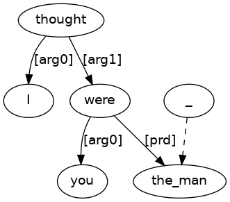
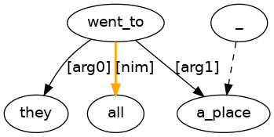
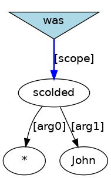
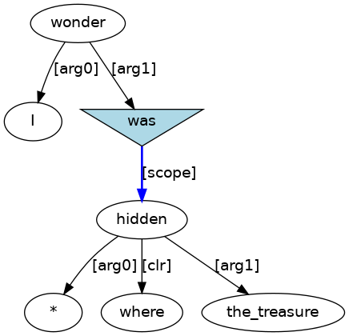
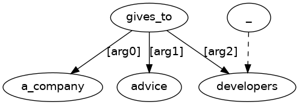
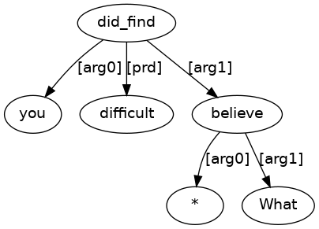
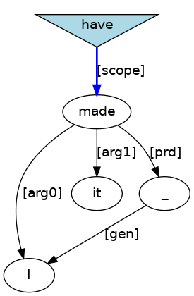
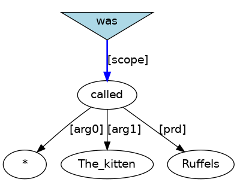
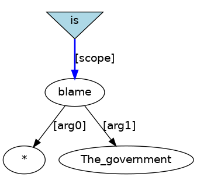
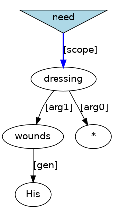

Verb code examples
1.1 La (section 4.2.1)
- (1.1)
-
He[PRO] appeared[VBD;~La] tall[ADJ] .[PUNC]
- (1.2)
-
(IP-MAT (NP-SBJ (PRO He))
(VBD;~La appeared)
(ADJP-PRD (ADJ tall))
(PUNC .))
- (1.3)
-

- (1.4)
-
It[PRO;_expletive_] is[BEP;~La] cold[ADJ] .[PUNC]
- (1.5)
-
(IP-MAT (NP-SBJ (PRO;_expletive_ It))
(BEP;~La is)
(ADJP-PRD (ADJ cold))
(PUNC .))
- (1.6)
-

- (1.7)
-
He[PRO] was[BED;~La] unable[ADJ;_cat_] to[TO] move[VB;~I] .[PUNC]
- (1.8)
-
(IP-MAT (NP-SBJ (PRO He))
(BED;~La was)
(ADJP-PRD (ADJ;_cat_ unable)
(IP-INF (TO to)
(VB;~I move)))
(PUNC .))
- (1.9)
-

- (1.10)
-
How[WADV] annoying[ADJ] would[MD;~cat_Vi] that[D;_nphd_] be[BE;~La] ?[PUNC]
- (1.11)
-
(CP-QUE-MAT (IP-SUB (ADJP-185 (ADVP (WADV How))
(ADJ annoying))
(MD;~cat_Vi would)
(NP-SBJ (D;_nphd_ that))
(IP-INF-CAT (BE;~La be)
(ADJP-PRD *ICH*-185)))
(PUNC ?))
- (1.12)
-
1.2 Ln (section 4.2.2)
- (1.13)
-
I[PRO] thought[VBD;~Tf] you[PRO] were[BED;~Ln] a[D] burglar[N] ![PUNC]
- (1.14)
-
(IP-MAT (NP-SBJ (PRO I))
(VBD;~Tf thought)
(CP-THT-OB1 (IP-SUB (NP-SBJ (PRO you))
(BED;~Ln were)
(NP-PRD (D a)
(N burglar))))
(PUNC !))
- (1.15)
-

- (1.16)
-
It[PRO;_expletive_] was[BED;~Ln] night[N] .[PUNC]
- (1.17)
-
(IP-MAT (NP-SBJ (PRO;_expletive_ It))
(BED;~Ln was)
(NP-PRD (N night))
(PUNC .))
- (1.18)
-

- (1.19)
-
the[D] man[N] I[PRO] thought[VBD;~Tf] you[PRO] were[BED;~Ln]
- (1.20)
-
(FRAG (NP (D the)
(N man)
(IP-REL (NP-SBJ (PRO I))
(VBD;~Tf thought)
(CP-THT-OB1 (IP-SUB (NP-SBJ (PRO you))
(BED;~Ln were)
(NP-PRD *T*))))))
- (1.21)
-

1.3 I (section 4.3.1)
- (1.22)
-
He[PRO] smiled[VBD;~I] .[PUNC]
- (1.23)
-
(IP-MAT (NP-SBJ (PRO He))
(VBD;~I smiled)
(PUNC .))
- (1.24)
-

- (1.25)
-
It[PRO;_expletive_] rained[VBD;~I] .[PUNC]
- (1.26)
-
(IP-MAT (NP-SBJ (PRO;_expletive_ It))
(VBD;~I rained)
(PUNC .))
- (1.27)
-

1.4 Ip (section 4.3.2)
- (1.28)
-
Nasha[NPR] looked[VBD;~Ip] back[RP] .[PUNC]
- (1.29)
-
(IP-MAT (NP-SBJ (NPR Nasha))
(VBD;~Ip looked)
(ADVP-CLR (RP back))
(PUNC .))
- (1.30)
-

- (1.31)
-
the[D] place[N] where[RADV] you[PRO] are[BEP;~cat_Vg] standing[VAG;~Ip]
- (1.32)
-
(FRAG (NP (D the)
(N place)
(IP-REL (ADVP-476 (RADV where))
(NP-SBJ (PRO you))
(BEP;~cat_Vg are)
(IP-PPL-CAT (VAG;~Ip standing)
(ADVP-CLR *ICH*-476)))))
- (1.33)
-

1.5 Ipr (section 4.3.3)
- (1.34)
-
They[PRO] went[VBD;~Ipr] to[P-ROLE] bed[N] .[PUNC]
- (1.35)
-
(IP-MAT (NP-SBJ (PRO They))
(VBD;~Ipr went)
(PP-CLR (P-ROLE to)
(NP (N bed)))
(PUNC .))
- (1.36)
-

- (1.37)
-
a[D] place[N] that[C] they[PRO] all[ADV] went[VBD;~Ipr] to[P-ROLE]
- (1.38)
-
(FRAG (NP (D a)
(N place)
(IP-REL (C that)
(NP-SBJ (PRO they))
(ADVP-NIM (ADV all))
(VBD;~Ipr went)
(PP-CLR (P-ROLE to)
(NP *T*)))))
- (1.39)
-

- (1.40)
-
leaks[NS] through[P-ROLE] which[RPRO] the[D] precious[ADJ] air[N] was[BED;~cat_Vg] rushing[VAG;~Ipr]
- (1.41)
-
(FRAG (NP (NS leaks)
(IP-REL (PP-671 (P-ROLE through)
(NP (RPRO which)))
(NP-SBJ (D the)
(ADJP (ADJ precious))
(N air))
(BED;~cat_Vg was)
(IP-PPL-CAT (VAG;~Ipr rushing)
(PP-CLR *ICH*-671)))))
- (1.42)
-

- (1.43)
-
These[D;_nphd_] are[BEP;~cat_Ve_passive_] looked[VVN;~Ipr] after[P-ROLE] .[PUNC]
- (1.44)
-
(IP-MAT (NP-SBJ (D;_nphd_ These))
(BEP;~cat_Ve_passive_ are)
(IP-PPL-CAT (NP-LGS *)
(VVN;~Ipr looked)
(PP-CLR (P-ROLE after)))
(PUNC .))
- (1.45)
-

1.6 In/pr (section 4.3.4)
- (1.46)
-
We[PRO] stayed[VBD;~In/pr] a[D] fortnight[N] .[PUNC]
- (1.47)
-
(IP-MAT (NP-SBJ (PRO We))
(VBD;~In/pr stayed)
(NP-CLR (D a)
(N fortnight))
(PUNC .))
- (1.48)
-

- (1.49)
-
We[PRO] stayed[VBD;~In/pr] for[P-ROLE] a[D] fortnight[N] .[PUNC]
- (1.50)
-
(IP-MAT (NP-SBJ (PRO We))
(VBD;~In/pr stayed)
(PP-CLR (P-ROLE for)
(NP (D a)
(N fortnight)))
(PUNC .))
- (1.51)
-

1.7 It (section 4.3.5)
- (1.52)
-
They[PRO] came[VBD;~It] to[TO] conquer[VB;~I] .[PUNC]
- (1.53)
-
(IP-MAT (NP-SBJ (PRO They))
(VBD;~It came)
(IP-INF-CLR (TO to)
(VB;~I conquer))
(PUNC .))
- (1.54)
-

- (1.55)
-
We[PRO] waited[VBD;~It] for[P-CONN] it[PRO;_expletive_] to[TO] rain[VB;~I] .[PUNC]
- (1.56)
-
(IP-MAT (NP-SBJ (PRO We))
(VBD;~It waited)
(IP-INF-CLR (P-CONN for)
(NP-SBJ (PRO;_expletive_ it))
(TO to)
(VB;~I rain))
(PUNC .))
- (1.57)
-

1.8 Tn (section 4.4.1)
- (1.58)
-
The[D] teacher[N] scolded[VBD;~Tn] John[NPR] .[PUNC]
- (1.59)
-
(IP-MAT (NP-SBJ (D The)
(N teacher))
(VBD;~Tn scolded)
(NP-OB1 (NPR John))
(PUNC .))
- (1.60)
-

- (1.61)
-
a[D] student[N] who[RPRO] the[D] teacher[N] scolded[VBD;~Tn]
- (1.62)
-
(FRAG (NP (D a)
(N student)
(IP-REL (NP-512 (RPRO who))
(NP-SBJ (D the)
(N teacher))
(VBD;~Tn scolded)
(NP-OB1 *ICH*-512))))
- (1.63)
-
- (1.64)
-
John[NPR] was[BED;~cat_Ve_passive_] scolded[VVN;~Tn] .[PUNC]
- (1.65)
-
(IP-MAT (NP-SBJ (NPR John))
(BED;~cat_Ve_passive_ was)
(IP-PPL-CAT (NP-LGS *)
(VVN;~Tn scolded))
(PUNC .))
- (1.66)
-

- (1.67)
-
John[NPR] was[BED;~cat_Ve_passive_] scolded[VVN;~Tn] by[P-ROLE;_lgs_] the[D] teacher[N] .[PUNC]
- (1.68)
-
(IP-MAT (NP-SBJ (NPR John))
(BED;~cat_Ve_passive_ was)
(IP-PPL-CAT (VVN;~Tn scolded)
(PP-LGS (P-ROLE;_lgs_ by)
(NP (D the)
(N teacher))))
(PUNC .))
- (1.69)
-

1.9 Tn.p (section 4.4.2)
- (1.70)
-
Susan[NPR] turned[VBD;~Tn.p] the[D] gas[N] on[RP] .[PUNC]
- (1.71)
-
(IP-MAT (NP-SBJ (NPR Susan))
(VBD;~Tn.p turned)
(NP-OB1 (D the)
(N gas))
(ADVP-CLR (RP on))
(PUNC .))
- (1.72)
-

- (1.73)
-
I[PRO] sucked[VBD;~Tn.p] in[RP] my[PRO;_genm_] breath[N] .[PUNC]
- (1.74)
-
(IP-MAT (NP-SBJ (PRO I))
(VBD;~Tn.p sucked)
(ADVP-CLR (RP in))
(NP-OB1 (NP-GEN (PRO;_genm_ my))
(N breath))
(PUNC .))
- (1.75)
-

- (1.76)
-
more[ADJR] stuff[N] to[TO] put[VB;~Tn.p] in[RP]
- (1.77)
-
(FRAG (NP (ADJP (ADJR more))
(N stuff)
(IP-INF-REL (TO to)
(VB;~Tn.p put)
(NP-OB1 *T*)
(ADVP-CLR (RP in)))))
- (1.78)
-

- (1.79)
-
I[PRO] wonder[VBP;~Tw] where[WADV] she[PRO] 's[HVP;~cat_Ve] hidden[VVN;~Tn.p] the[D] treasure[N] .[PUNC]
- (1.80)
-
(IP-MAT (NP-SBJ (PRO I))
(VBP;~Tw wonder)
(CP-QUE-OB1 (IP-SUB (ADVP-42 (WADV where))
(NP-SBJ (PRO she))
(HVP;~cat_Ve <apos>s)
(IP-PPL-CAT (VVN;~Tn.p hidden)
(ADVP-CLR *ICH*-42)
(NP-OB1 (D the)
(N treasure)))))
(PUNC .))
- (1.81)
-

- (1.82)
-
I[PRO] wonder[VBP;~Tw] how[WADV] she[PRO] acquired[VBD;~Tn] and[CONJ] where[WADV] she[PRO] 's[HVP;~cat_Ve] hidden[VVN;~Tn.p] ,[PUNC] the[D] treasure[N] .[PUNC]
- (1.83)
-
(IP-MAT (NP-SBJ (PRO I))
(VBP;~Tw wonder)
(CP-QUE-OB1 (IP-SUB (ILYR (ILYR (ADVP-NIM (WADV how))
(NP-SBJ (PRO she))
(VBD;~Tn acquired)
(NP-OB1 *ICH*-445))
(CONJP (CONJ and)
(ILYR (ADVP-1153 (WADV where))
(NP-SBJ (PRO she))
(HVP;~cat_Ve <apos>s)
(IP-PPL-CAT (VVN;~Tn.p hidden)
(NP-OB1 *ICH*-445)
(ADVP-CLR *ICH*-1153)))))))
(PUNC ,)
(NP-RNR-445 (D the)
(N treasure))
(PUNC .))
- (1.84)
-

- (1.85)
-
The[D] straw[N] was[BED;~cat_Ve_passive_] peeled[VVN;~Tn.p] off[RP] .[PUNC]
- (1.86)
-
(IP-MAT (NP-SBJ (D The)
(N straw))
(BED;~cat_Ve_passive_ was)
(IP-PPL-CAT (NP-LGS *)
(VVN;~Tn.p peeled)
(ADVP-CLR (RP off)))
(PUNC .))
- (1.87)
-

- (1.88)
-
I[PRO] wonder[VBP;~Tw] where[WADV] the[D] treasure[N] was[BED;~cat_Ve_passive_] hidden[VVN;~Tn.p] .[PUNC]
- (1.89)
-
(IP-MAT (NP-SBJ (PRO I))
(VBP;~Tw wonder)
(CP-QUE-OB1 (IP-SUB (ADVP-97 (WADV where))
(NP-SBJ (D the)
(N treasure))
(BED;~cat_Ve_passive_ was)
(IP-PPL-CAT (NP-LGS *)
(VVN;~Tn.p hidden)
(ADVP-CLR *ICH*-97))))
(PUNC .))
- (1.90)
-

1.10 Tn.pr (section 4.4.3)
- (1.91)
-
It[PRO] filled[VBD;~Tn.pr] me[PRO] with[P-ROLE] fear[N] .[PUNC]
- (1.92)
-
(IP-MAT (NP-SBJ (PRO It))
(VBD;~Tn.pr filled)
(NP-OB1 (PRO me))
(PP-CLR (P-ROLE with)
(NP (N fear)))
(PUNC .))
- (1.93)
-

- (1.94)
-
taskW[NPR] runs[VBP;~Tn.pr] in[P-ROLE] a[D] taskwindow[N] an[D] executable[N] .[PUNC]
- (1.95)
-
(IP-MAT (NP-SBJ (NPR taskW))
(VBP;~Tn.pr runs)
(PP-CLR (P-ROLE in)
(NP (D a)
(N taskwindow)))
(NP-OB1 (D an)
(N executable))
(PUNC .))
- (1.96)
-

- (1.97)
-
I[PRO] leave[VBP;~Tn.pr] it[PRO;_provisional_] to[P-ROLE] you[PRO] to[TO] decide[VB;~I] .[PUNC]
- (1.98)
-
(IP-MAT (NP-SBJ (PRO I))
(VBP;~Tn.pr leave)
(NP-OB1 (PRO;_provisional_ it))
(PP-CLR (P-ROLE to)
(NP (PRO you)))
(IP-INF-NOB1 (TO to)
(VB;~I decide))
(PUNC .))
- (1.99)
-
- (1.100)
-
the[D] people[NS] who[RPRO] I[PRO] take[VBP;~Tn.pr] items[N] over_to[P-ROLE]
- (1.101)
-
(FRAG (NP (D the)
(NS people)
(IP-REL (NP-620 (RPRO who))
(NP-SBJ (PRO I))
(VBP;~Tn.pr take)
(NP-OB1 (N items))
(PP-CLR (P-ROLE over_to)
(NP *ICH*-620)))))
- (1.102)
-
- (1.103)
-
the[D] people[NS] over_to[P-ROLE] who[RPRO] I[PRO] take[VBP;~Tn.pr] items[N]
- (1.104)
-
(FRAG (NP (D the)
(NS people)
(IP-REL (PP-646 (P-ROLE over_to)
(NP (RPRO who)))
(NP-SBJ (PRO I))
(VBP;~Tn.pr take)
(NP-OB1 (N items))
(PP-CLR *ICH*-646))))
- (1.105)
-

- (1.106)
-
items[NS] which[RPRO] I[PRO] take[VBP;~Tn.pr] over_to[P-ROLE] my[PRO;_genm_] mother[N]
- (1.107)
-
(FRAG (NP (NS items)
(IP-REL (NP-577 (RPRO which))
(NP-SBJ (PRO I))
(VBP;~Tn.pr take)
(NP-OB1 *ICH*-577)
(PP-CLR (P-ROLE over_to)
(NP (NP-GEN (PRO;_genm_ my))
(N mother))))))
- (1.108)
-

- (1.109)
-
Two[N] certificates[NS] are[BEP;~cat_Ve_passive_] pinned[VVN;~Tn.pr] on[P-ROLE] the[D] wall[N] .[PUNC]
- (1.110)
-
(IP-MAT (NP-SBJ (N Two)
(NS certificates))
(BEP;~cat_Ve_passive_ are)
(IP-PPL-CAT (NP-LGS *)
(VVN;~Tn.pr pinned)
(PP-CLR (P-ROLE on)
(NP (D the)
(N wall))))
(PUNC .))
- (1.111)
-
- (1.112)
-
the[D] diet[N] he[PRO] was[BED;~cat_Ve_passive_] put[VVN;~Tn.pr] on[P-ROLE]
- (1.113)
-
(FRAG (NP (D the)
(N diet)
(IP-REL (NP-SBJ (PRO he))
(BED;~cat_Ve_passive_ was)
(IP-PPL-CAT (NP-LGS *)
(VVN;~Tn.pr put)
(PP-CLR (P-ROLE on)
(NP *T*))))))
- (1.114)
-

- (1.115)
-
the[D] diet[N] on[P-ROLE] which[RPRO] he[PRO] was[BED;~cat_Ve_passive_] put[VVN;~Tn.pr]
- (1.116)
-
(FRAG (NP (D the)
(N diet)
(IP-REL (PP-630 (P-ROLE on)
(NP (RPRO which)))
(NP-SBJ (PRO he))
(BED;~cat_Ve_passive_ was)
(IP-PPL-CAT (NP-LGS *)
(VVN;~Tn.pr put)
(PP-CLR *ICH*-630)))))
- (1.117)
-

- (1.118)
-
He[PRO] was[BED;~cat_Ve_passive_] put[VVN;~Tn.pr] by[P-ROLE;_lgs_] the[D] doctor[N] on[P-ROLE] a[D] diet[N] .[PUNC]
- (1.119)
-
(IP-MAT (NP-SBJ (PRO He))
(BED;~cat_Ve_passive_ was)
(IP-PPL-CAT (VVN;~Tn.pr put)
(PP-LGS (P-ROLE;_lgs_ by)
(NP (D the)
(N doctor)))
(PP-CLR (P-ROLE on)
(NP (D a)
(N diet))))
(PUNC .))
- (1.120)
-

1.11 Tf (section 4.4.4)
- (1.121)
-
What[WPRO] do[DOP] you[PRO] suppose[VB;~Tf] an[D] exploring[N] party[N] would[MD;~cat_Vi] find[VB;~Tn] ?[PUNC]
- (1.122)
-
(CP-QUE-MAT (IP-SUB (NP-847 (WPRO What))
(DOP do)
(NP-SBJ (PRO you))
(VB;~Tf suppose)
(CP-THT-OB1 (IP-SUB (NP-SBJ (D an)
(N exploring)
(N party))
(MD;~cat_Vi would)
(IP-INF-CAT (VB;~Tn find)
(NP-OB1 *ICH*-847)))))
(PUNC ?))
- (1.123)
-

1.12 Tw (section 4.4.5)
- (1.124)
-
A[D] parse[N] tells[VBP;~Tw] how[WADV] information[N] flows[VBP;~Ipr] through[P-ROLE] structure[N] .[PUNC]
- (1.125)
-
(IP-MAT (NP-SBJ (D A)
(N parse))
(VBP;~Tw tells)
(CP-QUE-OB1 (IP-SUB (ADVP-NIM (WADV how))
(NP-SBJ (N information))
(VBP;~Ipr flows)
(PP-CLR (P-ROLE through)
(NP (N structure)))))
(PUNC .))
- (1.126)
-

- (1.127)
-
I[PRO] do[DOP] n't[NEG;_clitic_] know[VB;~Tw] what[WPRO] to[TO] do[DO;~Tn] .[PUNC]
- (1.128)
-
(IP-MAT (NP-SBJ (PRO I))
(DOP do)
(NEG;_clitic_ n<apos>t)
(VB;~Tw know)
(CP-QUE-OB1 (IP-INF (NP-97 (WPRO what))
(TO to)
(DO;~Tn do)
(NP-OB1 *ICH*-97)))
(PUNC .))
- (1.129)
-
1.13 Tr (section 4.4.6)
- (1.130)
-
I[PRO] said[VBD;~Tr] “[PULQ] I[PRO] 'm[BEP;~cat_Vg] going[VAG;~Ipr] to[P-ROLE] bed[N] .[PUNC] ”[PURQ] .[PUNC]
- (1.131)
-
(IP-MAT (NP-SBJ (PRO I))
(VBD;~Tr said)
(PULQ <ldquo>)
(utterance-OB1 (IP-MAT (NP-SBJ (PRO I))
(BEP;~cat_Vg <apos>m)
(IP-PPL-CAT (VAG;~Ipr going)
(PP-CLR (P-ROLE to)
(NP (N bed))))
(PUNC .)))
(PURQ <rdquo>)
(PUNC .))
- (1.132)
-

- (1.133)
-
“[PULQ] A[D] paradox[N] .[PUNC] ”[PURQ] ,[PUNC] Nasha[NPR] said[VBD;~Tr] .[PUNC]
- (1.134)
-
(IP-MAT (PULQ <ldquo>)
(utterance-TPC-41 (FRAG (NP (D A)
(N paradox))
(PUNC .)))
(PURQ <rdquo>)
(PUNC ,)
(NP-SBJ (NPR Nasha))
(VBD;~Tr said)
(utterance-OB1 *ICH*-41)
(PUNC .))
- (1.135)
-

1.14 Tt (section 4.4.7)
- (1.136)
-
We[PRO] had[HVD;~cat_Ve] planned[VVN;~Tt] to[TO] meet[VB;~I] .[PUNC]
- (1.137)
-
(IP-MAT (NP-SBJ (PRO We))
(HVD;~cat_Ve had)
(IP-PPL-CAT (VVN;~Tt planned)
(IP-INF-OB1 (TO to)
(VB;~I meet)))
(PUNC .))
- (1.138)
-

1.15 Tnt (section 4.4.8)
- (1.139)
-
They[PRO] allowed[VBD;~Tnt] no[Q] building[N] to[TO] be[BE;~cat_Ve_passive_] erected[VVN;~Tn] .[PUNC]
- (1.140)
-
(IP-MAT (NP-SBJ (PRO They))
(VBD;~Tnt allowed)
(NP-DOB1 (Q no)
(N building))
(IP-INF-OB1 (TO to)
(BE;~cat_Ve_passive_ be)
(IP-PPL-CAT (NP-LGS *)
(VVN;~Tn erected)))
(PUNC .))
- (1.141)
-

- (1.142)
-
John[NPR] needed[VBD;~Tnt] it[PRO;_expletive_] to[TO] rain[VB;~I] .[PUNC]
- (1.143)
-
(IP-MAT (NP-SBJ (NPR John))
(VBD;~Tnt needed)
(NP-DOB1 (PRO;_expletive_ it))
(IP-INF-OB1 (TO to)
(VB;~I rain))
(PUNC .))
- (1.144)
-

- (1.145)
-
something[D;_nphd_] which[RPRO] he[PRO] believes[VBP;~Tnt] to[TO] be[BE;~La] correct[ADJ]
- (1.146)
-
(FRAG (NP (D;_nphd_ something)
(IP-REL (NP-451 (RPRO which))
(NP-SBJ (PRO he))
(VBP;~Tnt believes)
(NP-DOB1 *ICH*-451)
(IP-INF-OB1 (TO to)
(BE;~La be)
(ADJP-PRD (ADJ correct))))))
- (1.147)
-
- (1.148)
-
No[Q] building[N] was[BED;~cat_Ve_passive_] allowed[VVN;~Tnt] to[TO] be[BE;~cat_Ve_passive_] erected[VVN;~Tn] .[PUNC]
- (1.149)
-
(IP-MAT (NP-SBJ (Q No)
(N building))
(BED;~cat_Ve_passive_ was)
(IP-PPL-CAT (NP-LGS *)
(VVN;~Tnt allowed)
(IP-INF-OB1 (TO to)
(BE;~cat_Ve_passive_ be)
(IP-PPL-CAT (NP-LGS *)
(VVN;~Tn erected))))
(PUNC .))
- (1.150)
-

- (1.151)
-
This[D] place[N] is[BEP;~cat_Ve_passive_] believed[VVN;~Tnt] by[P-ROLE;_lgs_] the[D] pirates[NS] to[TO] be[BE;~La] safe[ADJ] .[PUNC]
- (1.152)
-
(IP-MAT (NP-SBJ (D This)
(N place))
(BEP;~cat_Ve_passive_ is)
(IP-PPL-CAT (VVN;~Tnt believed)
(PP-LGS (P-ROLE;_lgs_ by)
(NP (D the)
(NS pirates)))
(IP-INF-OB1 (TO to)
(BE;~La be)
(ADJP-PRD (ADJ safe))))
(PUNC .))
- (1.153)
-

- (1.154)
-
Kim[NPR] expected[VBD;~Tnt] it[PRO;_provisional_] to[TO] be[BE;~La] easy[ADJ] to[TO] impress[VB;~Tn] Sandy[NPR] .[PUNC]
- (1.155)
-
(IP-MAT (NP-SBJ (NPR Kim))
(VBD;~Tnt expected)
(NP-DOB1 (PRO;_provisional_ it))
(IP-INF-OB1 (TO to)
(BE;~La be)
(ADJP-PRD (ADJ easy)))
(IP-INF-NDOB1 (TO to)
(VB;~Tn impress)
(NP-OB1 (NPR Sandy)))
(PUNC .))
- (1.156)
-

- (1.157)
-
Some[D] geologists[NS] believe[VBP;~Tnt] there[EX] to[TO] be[BE;~ex_Vpr] oil[N] in[P-ROLE] Brooklyn[NPR] .[PUNC]
- (1.158)
-
(IP-MAT (NP-SBJ (D Some)
(NS geologists))
(VBP;~Tnt believe)
(EX there)
(IP-INF-OB1 (TO to)
(BE;~ex_Vpr be)
(NP-ESBJ (N oil))
(PP-CLR (P-ROLE in)
(NP (NPR Brooklyn))))
(PUNC .))
- (1.159)
-

- (1.160)
-
There[EX] is[BEP;~cat_Ve_passive_] believed[VVN;~Tnt] by[P-ROLE;_lgs_] some[D] geologists[NS] to[TO] be[BE;~ex_Vpr] oil[N] in[P-ROLE] Brooklyn[NPR] .[PUNC]
- (1.161)
-
(IP-MAT (EX There)
(BEP;~cat_Ve_passive_ is)
(IP-PPL-CAT (VVN;~Tnt believed)
(PP-LGS (P-ROLE;_lgs_ by)
(NP (D some)
(NS geologists)))
(IP-INF-OB1 (TO to)
(BE;~ex_Vpr be)
(NP-ESBJ (N oil))
(PP-CLR (P-ROLE in)
(NP (NPR Brooklyn)))))
(PUNC .))
- (1.162)
-
1.16 Tprt (section 4.4.9)
- (1.163)
-
We[PRO] depend[VBP;~Tprt] on[P-ROLE] you[PRO] to[TO] come[VB;~I] .[PUNC]
- (1.164)
-
(IP-MAT (NP-SBJ (PRO We))
(VBP;~Tprt depend)
(PP-DOB1 (P-ROLE on)
(NP (PRO you)))
(IP-INF-OB1 (TO to)
(VB;~I come))
(PUNC .))
- (1.165)
-
1.17 Tni (section 4.4.10)
- (1.166)
-
You[PRO] can[MD;~cat_Vi] see[VB;~Tni] the[D] blood[N] run[VB;~Ipr] from[P-ROLE] their[PRO;_genm_] face[N] .[PUNC]
- (1.167)
-
(IP-MAT (NP-SBJ (PRO You))
(MD;~cat_Vi can)
(IP-INF-CAT (VB;~Tni see)
(NP-DOB1 (D the)
(N blood))
(IP-INF-OB1 (VB;~Ipr run)
(PP-CLR (P-ROLE from)
(NP (NP-GEN (PRO;_genm_ their))
(N face)))))
(PUNC .))
- (1.168)
-
- (1.169)
-
There[EX] is[BEP;~ex_V] someone[D;_nphd_] whom[RPRO] Helen[NPR] saw[VBD;~Tni] answer[VB;~Tn] the[D] phone[N] .[PUNC]
- (1.170)
-
(IP-MAT (EX There)
(BEP;~ex_V is)
(NP-ESBJ (D;_nphd_ someone)
(IP-REL (NP-43 (RPRO whom))
(NP-SBJ (NPR Helen))
(VBD;~Tni saw)
(NP-DOB1 *ICH*-43)
(IP-INF-OB1 (VB;~Tn answer)
(NP-OB1 (D the)
(N phone)))))
(PUNC .))
- (1.171)
-

1.18 Tg (section 4.4.11)
- (1.172)
-
Stop[VB;~Tg] shouting[VAG;~I] .[PUNC]
- (1.173)
-
(IP-IMP (VB;~Tg Stop)
(IP-PPL-OB1 (VAG;~I shouting))
(PUNC .))
- (1.174)
-

1.19 Tng (section 4.4.12)
- (1.175)
-
She[PRO] could[MD;~cat_Vi] feel[VB;~Tng] it[PRO;_expletive_] raining[VAG;~I] .[PUNC]
- (1.176)
-
(IP-MAT (NP-SBJ (PRO She))
(MD;~cat_Vi could)
(IP-INF-CAT (VB;~Tng feel)
(NP-DOB1 (PRO;_expletive_ it))
(IP-PPL-OB1 (VAG;~I raining)))
(PUNC .))
- (1.177)
-

- (1.178)
-
There[EX] is[BEP;~ex_V] someone[D;_nphd_] whom[RPRO] Helen[NPR] saw[VBD;~Tng] hoeing[VAG;~Tn] onions[NS] .[PUNC]
- (1.179)
-
(IP-MAT (EX There)
(BEP;~ex_V is)
(NP-ESBJ (D;_nphd_ someone)
(IP-REL (NP-41 (RPRO whom))
(NP-SBJ (NPR Helen))
(VBD;~Tng saw)
(NP-DOB1 *ICH*-41)
(IP-PPL-OB1 (VAG;~Tn hoeing)
(NP-OB1 (NS onions)))))
(PUNC .))
- (1.180)
-
- (1.181)
-
The[D] raiders[NS] can[MD;~cat_Vi] be[BE;~cat_Ve_passive_] seen[VVN;~Tng] hovering[VAG;~Ipr] around[P-ROLE] the[D] surface[N] .[PUNC]
- (1.182)
-
(IP-MAT (NP-SBJ (D The)
(NS raiders))
(MD;~cat_Vi can)
(IP-INF-CAT (BE;~cat_Ve_passive_ be)
(IP-PPL-CAT (NP-LGS *)
(VVN;~Tng seen)
(IP-PPL-OB1 (VAG;~Ipr hovering)
(PP-CLR (P-ROLE around)
(NP (D the)
(N surface))))))
(PUNC .))
- (1.183)
-
1.20 Tsg (section 4.4.13)
- (1.184)
-
Do[DOP] n't[NEG;_clitic_] you[PRO] remember[VB;~Tsg] my[PRO;_genm_] telling[VAG;~Dn.*] you[PRO] ?[PUNC]
- (1.185)
-
(CP-QUE-MAT (IP-SUB (DOP Do)
(NEG;_clitic_ n<apos>t)
(NP-SBJ (PRO you))
(VB;~Tsg remember)
(IP-PPL3-OB1 (NP-SBJ (PRO;_genm_ my))
(VAG;~Dn.* telling)
(NP-OB2 (PRO you))))
(PUNC ?))
- (1.186)
-

- (1.187)
-
Do[DOP] n't[NEG;_clitic_] you[PRO] remember[VB;~Tsg] me[PRO] telling[VAG;~Dn.*] you[PRO] ?[PUNC]
- (1.188)
-
(CP-QUE-MAT (IP-SUB (DOP Do)
(NEG;_clitic_ n<apos>t)
(NP-SBJ (PRO you))
(VB;~Tsg remember)
(IP-PPL3-OB1 (NP-SBJ (PRO me))
(VAG;~Dn.* telling)
(NP-OB2 (PRO you))))
(PUNC ?))
- (1.189)
-

1.21 Dn.n (section 4.5.1)
- (1.190)
-
He[PRO] gave[VBD;~Dn.n] it[PRO] her[PRO] .[PUNC]
- (1.191)
-
(IP-MAT (NP-SBJ (PRO He))
(VBD;~Dn.n gave)
(NP-OB1 (PRO it))
(NP-OB2 (PRO her))
(PUNC .))
- (1.192)
-
- (1.193)
-
Daddy[N] bought[VBD;~Dn.n] me[PRO] a[D] new[ADJ] bike[N] .[PUNC]
- (1.194)
-
(IP-MAT (NP-SBJ (N Daddy))
(VBD;~Dn.n bought)
(NP-OB2 (PRO me))
(NP-OB1 (D a)
(ADJP (ADJ new))
(N bike))
(PUNC .))
- (1.195)
-
- (1.196)
-
the[D] task[N] he[PRO] set[VBD;~Dn.n] himself[PNX]
- (1.197)
-
(FRAG (NP (D the)
(N task)
(IP-REL (NP-SBJ (PRO he))
(VBD;~Dn.n set)
(NP-OB1 *T*)
(NP-OB2 (PNX himself)))))
- (1.198)
-
- (1.199)
-
We[PRO] were[BED;~cat_Ve_passive_] played[VVN;~Dn.n] two[N] recordings[NS] .[PUNC]
- (1.200)
-
(IP-MAT (NP-SBJ (PRO We))
(BED;~cat_Ve_passive_ were)
(IP-PPL-CAT (NP-LGS *)
(VVN;~Dn.n played)
(NP-OB1 (N two)
(NS recordings)))
(PUNC .))
- (1.201)
-

- (1.202)
-
everything[Q;_nphd_] everyone[Q;_nphd_] has[HVP;~cat_Ve] been[BEN;~cat_Ve_passive_] taught[VVN;~Dn.n]
- (1.203)
-
(FRAG (NP (Q;_nphd_ everything)
(IP-REL (NP-SBJ (Q;_nphd_ everyone))
(HVP;~cat_Ve has)
(IP-PPL-CAT (BEN;~cat_Ve_passive_ been)
(IP-PPL-CAT (NP-LGS *)
(VVN;~Dn.n taught)
(NP-OB1 *T*))))))
- (1.204)
-

1.22 Dn.f (section 4.5.2)
- (1.205)
-
That[D;_nphd_] is[BEP;~equ_Vw] what[WPRO] the[D] advice[N] tells[VBP;~Dn.f] us[PRO] we[PRO] must[MD;~cat_Vi] do[DO;~Tn] .[PUNC]
- (1.206)
-
(IP-MAT (NP-SBJ (D;_nphd_ That))
(BEP;~equ_Vw is)
(CP-QUE-PRD (IP-SUB (NP-86 (WPRO what))
(NP-SBJ (D the)
(N advice))
(VBP;~Dn.f tells)
(NP-OB2 (PRO us))
(CP-THT-OB1 (IP-SUB (NP-SBJ (PRO we))
(MD;~cat_Vi must)
(IP-INF-CAT (DO;~Tn do)
(NP-OB1 *ICH*-86))))))
(PUNC .))
- (1.207)
-

- (1.208)
-
We[PRO] got[VBD;~cat_Ve_passive_] told[VVN;~Dn.f] that[C] the[D] laser[N] can[MD;~cat_Vi] cut[VB;~Ipr] through[P-ROLE] concrete[N] .[PUNC]
- (1.209)
-
(IP-MAT (NP-SBJ (PRO We))
(VBD;~cat_Ve_passive_ got)
(IP-PPL-CAT (NP-LGS *)
(VVN;~Dn.f told)
(CP-THT-OB1 (IP-SUB (C that)
(NP-SBJ (D the)
(N laser))
(MD;~cat_Vi can)
(IP-INF-CAT (VB;~Ipr cut)
(PP-CLR (P-ROLE through)
(NP (N concrete)))))))
(PUNC .))
- (1.210)
-
1.23 Dn.w (section 4.5.3)
- (1.211)
-
My[PRO;_genm_] uncle[N] showed[VBD;~Dn.w] me[PRO] how[WADV] to[TO] milk[VB;~Tn] the[D] cows[NS] .[PUNC]
- (1.212)
-
(IP-MAT (NP-SBJ (NP-GEN (PRO;_genm_ My))
(N uncle))
(VBD;~Dn.w showed)
(NP-OB2 (PRO me))
(CP-QUE-OB1 (IP-INF (ADVP-NIM (WADV how))
(TO to)
(VB;~Tn milk)
(NP-OB1 (D the)
(NS cows))))
(PUNC .))
- (1.213)
-

- (1.214)
-
We[PRO] were[BED;~cat_Ve_passive_] asked[VVN;~Dn.w] if[WQ] we[PRO] believed[VBD;~Tn] the[D] report[N] .[PUNC]
- (1.215)
-
(IP-MAT (NP-SBJ (PRO We))
(BED;~cat_Ve_passive_ were)
(IP-PPL-CAT (NP-LGS *)
(VVN;~Dn.w asked)
(CP-QUE-OB1 (IP-SUB (WQ if)
(NP-SBJ (PRO we))
(VBD;~Tn believed)
(NP-OB1 (D the)
(N report)))))
(PUNC .))
- (1.216)
-
1.24 Dn.r (section 4.5.4)
- (1.217)
-
She[PRO] asked[VBD;~Dn.r] the[D] Prime[NPR] Minister[NPR] “[PULQ] Is[BEP;~La] it[PRO] true[ADJ] ?[PUNC] ”[PURQ] .[PUNC]
- (1.218)
-
(IP-MAT (NP-SBJ (PRO She))
(VBD;~Dn.r asked)
(NP-OB2 (D the)
(NPR Prime)
(NPR Minister))
(PULQ <ldquo>)
(utterance-OB1 (CP-QUE-MAT (IP-SUB (BEP;~La Is)
(NP-SBJ (PRO it))
(ADJP-PRD (ADJ true)))
(PUNC ?)))
(PURQ <rdquo>)
(PUNC .))
- (1.219)
-

- (1.220)
-
The[D] Prime[NPR] Minister[NPR] was[BED;~cat_Ve_passive_] asked[VVN;~Dn.r] “[PULQ] Is[BEP;~La] it[PRO] true[ADJ] ?[PUNC] ”[PURQ] .[PUNC]
- (1.221)
-
(IP-MAT (NP-SBJ (D The)
(NPR Prime)
(NPR Minister))
(BED;~cat_Ve_passive_ was)
(IP-PPL-CAT (NP-LGS *)
(VVN;~Dn.r asked)
(PULQ <ldquo>)
(utterance-OB1 (CP-QUE-MAT (IP-SUB (BEP;~La Is)
(NP-SBJ (PRO it))
(ADJP-PRD (ADJ true)))
(PUNC ?)))
(PURQ <rdquo>))
(PUNC .))
- (1.222)
-

1.25 Dn.t (section 4.5.5)
- (1.223)
-
I[PRO] asked[VBD;~Dn.t] Andrew[NPR] to[TO] have[HV;~Tn] a[D] go[N] .[PUNC]
- (1.224)
-
(IP-MAT (NP-SBJ (PRO I))
(VBD;~Dn.t asked)
(NP-OB2 (NPR Andrew))
(IP-INF-OB1 (TO to)
(HV;~Tn have)
(NP-OB1 (D a)
(N go)))
(PUNC .))
- (1.225)
-

- (1.226)
-
I[PRO] have[HVP;~cat_Ve] been[BEN;~cat_Ve_passive_] forbidden[VVN;~Dn.t] to[TO] make[VB;~Tn] anything[D;_nphd_] .[PUNC]
- (1.227)
-
(IP-MAT (NP-SBJ (PRO I))
(HVP;~cat_Ve have)
(IP-PPL-CAT (BEN;~cat_Ve_passive_ been)
(IP-PPL-CAT (NP-LGS *)
(VVN;~Dn.t forbidden)
(IP-INF2-OB1 (TO to)
(VB;~Tn make)
(NP-OB1 (D;_nphd_ anything)))))
(PUNC .))
- (1.228)
-

1.26 Dn.* (section 4.5.6)
- (1.229)
-
I[PRO] did[DOD] tell[VB;~Dn.*] you[PRO] .[PUNC]
- (1.230)
-
(IP-MAT (NP-SBJ (PRO I))
(DOD did)
(VB;~Dn.* tell)
(NP-OB2 (PRO you))
(PUNC .))
- (1.231)
-

1.27 Dn.pr (section 4.5.7)
- (1.232)
-
Daddy[N] bought[VBD;~Dn.pr] a[D] new[ADJ] bike[N] for[P-ROLE] me[PRO] .[PUNC]
- (1.233)
-
(IP-MAT (NP-SBJ (N Daddy))
(VBD;~Dn.pr bought)
(NP-OB1 (D a)
(ADJP (ADJ new))
(N bike))
(PP-OB2 (P-ROLE for)
(NP (PRO me)))
(PUNC .))
- (1.234)
-
- (1.235)
-
I[PRO] want[VBP;~Tt] to[TO] say[VB;~Dn.pr] to[P-ROLE] you[PRO] something[D;_nphd_] .[PUNC]
- (1.236)
-
(IP-MAT (NP-SBJ (PRO I))
(VBP;~Tt want)
(IP-INF-OB1 (TO to)
(VB;~Dn.pr say)
(PP-OB2 (P-ROLE to)
(NP (PRO you)))
(NP-OB1 (D;_nphd_ something)))
(PUNC .))
- (1.237)
-

- (1.238)
-
the[D] maximum[ADJ] loan[N] that[C] the[D] state[N] could[MD;~cat_Vi] make[VB;~Dn.pr] to[P-ROLE] a[D] project[N]
- (1.239)
-
(FRAG (NP (D the)
(ADJP (ADJ maximum))
(N loan)
(IP-REL (C that)
(NP-SBJ (D the)
(N state))
(MD;~cat_Vi could)
(IP-INF-CAT (VB;~Dn.pr make)
(NP-OB1 *T*)
(PP-OB2 (P-ROLE to)
(NP (D a)
(N project)))))))
- (1.240)
-

- (1.241)
-
developers[NS] to[P-ROLE] who[RPRO] a[D] company[N] gives[VBP;~Dn.pr] advice[N]
- (1.242)
-
(FRAG (NP (NS developers)
(IP-REL (PP-685 (P-ROLE to)
(NP (RPRO who)))
(NP-SBJ (D a)
(N company))
(VBP;~Dn.pr gives)
(PP-OB2 *ICH*-685)
(NP-OB1 (N advice)))))
- (1.243)
-

- (1.244)
-
developers[NS] that[C] a[D] company[N] gives[VBP;~Dn.pr] advice[N] to[P-ROLE]
- (1.245)
-
(FRAG (NP (NS developers)
(IP-REL (C that)
(NP-SBJ (D a)
(N company))
(VBP;~Dn.pr gives)
(NP-OB1 (N advice))
(PP-OB2 (P-ROLE to)
(NP *T*)))))
- (1.246)
-

- (1.247)
-
Details[NS] of[P-ROLE] all[Q] negotiations[NS] are[BEP;~cat_Ve_passive_] sent[VVN;~Dn.pr] to[P-ROLE] Head[N] Office[N] .[PUNC]
- (1.248)
-
(IP-MAT (NP-SBJ (NS Details)
(PP (P-ROLE of)
(NP (Q all)
(NS negotiations))))
(BEP;~cat_Ve_passive_ are)
(IP-PPL-CAT (NP-LGS *)
(VVN;~Dn.pr sent)
(PP-OB2 (P-ROLE to)
(NP (N Head)
(N Office))))
(PUNC .))
- (1.249)
-

- (1.250)
-
developers[NS] to[P-ROLE] who[RPRO] advice[N] was[BED;~cat_Ve_passive_] given[VVN;~Dn.pr]
- (1.251)
-
(FRAG (NP (NS developers)
(IP-REL (PP-667 (P-ROLE to)
(NP (RPRO who)))
(NP-SBJ (N advice))
(BED;~cat_Ve_passive_ was)
(IP-PPL-CAT (NP-LGS *)
(VVN;~Dn.pr given)
(PP-OB2 *ICH*-667)))))
- (1.252)
-

- (1.253)
-
developers[NS] advice[N] was[BED;~cat_Ve_passive_] given[VVN;~Dn.pr] to[P-ROLE]
- (1.254)
-
(FRAG (NP (NS developers)
(IP-REL (NP-SBJ (N advice))
(BED;~cat_Ve_passive_ was)
(IP-PPL-CAT (NP-LGS *)
(VVN;~Dn.pr given)
(PP-OB2 (P-ROLE to)
(NP *T*))))))
- (1.255)
-

1.28 Dpr.f (section 4.5.8)
- (1.256)
-
We[PRO] did[DOD] n't[NEG;_clitic_] say[VB;~Dpr.f] to[P-ROLE] the[D] man[N] that[C] we[PRO] were[BED;~La] sorry[ADJ] .[PUNC]
- (1.257)
-
(IP-MAT (NP-SBJ (PRO We))
(DOD did)
(NEG;_clitic_ n<apos>t)
(VB;~Dpr.f say)
(PP-OB2 (P-ROLE to)
(NP (D the)
(N man)))
(CP-THT-OB1 (IP-SUB (C that)
(NP-SBJ (PRO we))
(BED;~La were)
(ADJP-PRD (ADJ sorry))))
(PUNC .))
- (1.258)
-

1.29 Dpr.r (section 4.5.9)
- (1.259)
-
She[PRO] said[VBD;~Dpr.r] to[P-ROLE] me[PRO] “[PULQ] Get[VB;~Ip] up[RP] ![PUNC] ”[PURQ] .[PUNC]
- (1.260)
-
(IP-MAT (NP-SBJ (PRO She))
(VBD;~Dpr.r said)
(PP-OB2 (P-ROLE to)
(NP (PRO me)))
(PULQ <ldquo>)
(utterance-OB1 (IP-IMP (VB;~Ip Get)
(ADVP-CLR (RP up))
(PUNC !)))
(PURQ <rdquo>)
(PUNC .))
- (1.261)
-

1.30 Cn.a (section 4.6.1)
- (1.262)
-
The[D] setting[ADJ] sun[N] painted[VBD;~Cn.a] the[D] western[ADJ] sky[N] red[ADJ] .[PUNC]
- (1.263)
-
(IP-MAT (NP-SBJ (D The)
(ADJP (ADJ setting))
(N sun))
(VBD;~Cn.a painted)
(NP-OB1 (D the)
(ADJP (ADJ western))
(N sky))
(ADJP-PRD (ADJ red))
(PUNC .))
- (1.264)
-
- (1.265)
-
He[PRO] flung[VBD;~Cn.a] open[ADJ] the[D] canopy[N] .[PUNC]
- (1.266)
-
(IP-MAT (NP-SBJ (PRO He))
(VBD;~Cn.a flung)
(ADJP-PRD (ADJ open))
(NP-OB1 (D the)
(N canopy))
(PUNC .))
- (1.267)
-

- (1.268)
-
her[PRO;_genm_] habits[NS] that[C] most[Q;_nphd_] would[MD;~cat_Vi] find[VB;~Cn.a] annoying[ADJ]
- (1.269)
-
(FRAG (NP (NP-GEN (PRO;_genm_ her))
(NS habits)
(IP-REL (C that)
(NP-SBJ (Q;_nphd_ most))
(MD;~cat_Vi would)
(IP-INF-CAT (VB;~Cn.a find)
(NP-OB1 *T*)
(ADJP-PRD (ADJ annoying))))))
- (1.270)
-

- (1.271)
-
A[D] map[N] makes[VBP;~Cn.a] it[PRO;_provisional_] easier[ADJR] to[TO] find[VB;~Tn] your[PRO;_genm_] way[N] .[PUNC]
- (1.272)
-
(IP-MAT (NP-SBJ (D A)
(N map))
(VBP;~Cn.a makes)
(NP-OB1 (PRO;_provisional_ it))
(ADJP-PRD (ADJR easier))
(IP-INF3-NOB1 (TO to)
(VB;~Tn find)
(NP-OB1 (NP-GEN (PRO;_genm_ your))
(N way)))
(PUNC .))
- (1.273)
-

- (1.274)
-
A[D] map[N] makes[VBP;~Cn.a] your[PRO;_genm_] way[N] easier[ADJR] to[TO] find[VB;~Tn] .[PUNC]
- (1.275)
-
(IP-MAT (NP-SBJ (D A)
(N map))
(VBP;~Cn.a makes)
(NP-OB1 (NP-GEN (PRO;_genm_ your))
(N way))
(ADJP-PRD (ADJR easier))
(IP-INF-NOB1 (NP-LGS *)
(TO to)
(VB;~Tn find))
(PUNC .))
- (1.276)
-

- (1.277)
-
What[WPRO] did[DOD] you[PRO] find[VB;~Cn.a] difficult[ADJ] to[TO] believe[VB;~Tn] ?[PUNC]
- (1.278)
-
(CP-QUE-MAT (IP-SUB (NP-148 (WPRO What))
(DOD did)
(NP-SBJ (PRO you))
(VB;~Cn.a find)
(NP-OB1 *ICH*-148)
(ADJP-PRD (ADJ difficult))
(IP-INF-NOB1 (NP-LGS *)
(TO to)
(VB;~Tn believe)))
(PUNC ?))
- (1.279)
-

- (1.280)
-
The[D] western[ADJ] sky[N] was[BED;~cat_Ve_passive_] painted[VVN;~Cn.a] red[ADJ] .[PUNC]
- (1.281)
-
(IP-MAT (NP-SBJ (D The)
(ADJP (ADJ western))
(N sky))
(BED;~cat_Ve_passive_ was)
(IP-PPL-CAT (NP-LGS *)
(VVN;~Cn.a painted)
(ADJP-PRD (ADJ red)))
(PUNC .))
- (1.282)
-
- (1.283)
-
This[D;_nphd_] was[BED;~cat_Ve_passive_] found[VVN;~Cn.a] difficult[ADJ] to[TO] believe[VB;~Tn] .[PUNC]
- (1.284)
-
(IP-MAT (NP-SBJ (D;_nphd_ This))
(BED;~cat_Ve_passive_ was)
(IP-PPL-CAT (NP-LGS *)
(VVN;~Cn.a found)
(ADJP-PRD (ADJ difficult))
(IP-INF-NOB1 (NP-LGS *)
(TO to)
(VB;~Tn believe)))
(PUNC .))
- (1.285)
-

1.31 Cn.n (section 4.6.2)
- (1.286)
-
I[PRO] have[HVP;~cat_Ve] made[VVN;~Cn.n] it[PRO] mine[PRO;_ppge_] .[PUNC]
- (1.287)
-
(IP-MAT (NP-SBJ (PRO I))
(HVP;~cat_Ve have)
(IP-PPL-CAT (VVN;~Cn.n made)
(NP-OB1 (PRO it))
(NP-PRD (NP-GEN (PRO;_ppge_ mine))))
(PUNC .))
- (1.288)
-

- (1.289)
-
Make[VB;~Cn.n] it[PRO;_provisional_] a[D] rule[N] to[TO] get[VB;~Ip] up[RP] .[PUNC]
- (1.290)
-
(IP-IMP (VB;~Cn.n Make)
(NP-OB1 (PRO;_provisional_ it))
(NP-PRD (D a)
(N rule))
(IP-INF3-NOB1 (TO to)
(VB;~Ip get)
(ADVP-CLR (RP up)))
(PUNC .))
- (1.291)
-
- (1.292)
-
a[D] kitten[N] who[RPRO] we[PRO] called[VBD;~Cn.n] Ruffels[NPR]
- (1.293)
-
(FRAG (NP (D a)
(N kitten)
(IP-REL (NP-489 (RPRO who))
(NP-SBJ (PRO we))
(VBD;~Cn.n called)
(NP-OB1 *ICH*-489)
(NP-PRD (NPR Ruffels)))))
- (1.294)
-
- (1.295)
-
The[D] kitten[N] was[BED;~cat_Ve_passive_] called[VVN;~Cn.n] Ruffels[NPR] .[PUNC]
- (1.296)
-
(IP-MAT (NP-SBJ (D The)
(N kitten))
(BED;~cat_Ve_passive_ was)
(IP-PPL-CAT (NP-LGS *)
(VVN;~Cn.n called)
(NP-PRD (NPR Ruffels)))
(PUNC .))
- (1.297)
-

- (1.298)
-
What[WPRO] was[BED;~cat_Ve_passive_] the[D] city[N] called[VVN;~Cn.n] ?[PUNC]
- (1.299)
-
(CP-QUE-MAT (IP-SUB (NP-201 (WPRO What))
(BED;~cat_Ve_passive_ was)
(NP-SBJ (D the)
(N city))
(IP-PPL-CAT (NP-LGS *)
(VVN;~Cn.n called)
(NP-PRD *ICH*-201)))
(PUNC ?))
- (1.300)
-

1.32 Cn.n/a (section 4.6.3)
- (1.301)
-
They[PRO] accepted[VBD;~Cn.n/a] it[PRO] as[P-ROLE] a[D] natural[ADJ] thing[N] .[PUNC]
- (1.302)
-
(IP-MAT (NP-SBJ (PRO They))
(VBD;~Cn.n/a accepted)
(NP-OB1 (PRO it))
(PP-PRD (P-ROLE as)
(NP (D a)
(ADJP (ADJ natural))
(N thing)))
(PUNC .))
- (1.303)
-

- (1.304)
-
Solicitors[NS] regarded[VBD;~Cn.n/a] the[D] rates[NS] of[P-ROLE] remuneration[N] as[P-ROLE] low[ADJ] .[PUNC]
- (1.305)
-
(IP-MAT (NP-SBJ (NS Solicitors))
(VBD;~Cn.n/a regarded)
(NP-OB1 (D the)
(NS rates)
(PP (P-ROLE of)
(NP (N remuneration))))
(PP-PRD (P-ROLE as)
(ADJP (ADJ low)))
(PUNC .))
- (1.306)
-

- (1.307)
-
The[D] alliance[N] became[VBD;~cat_Ve_passive_] known[VVN;~Cn.n/a] as[P-ROLE] the[D] Delian[NPR] League[NPR] .[PUNC]
- (1.308)
-
(IP-MAT (NP-SBJ (D The)
(N alliance))
(VBD;~cat_Ve_passive_ became)
(IP-PPL-CAT (NP-LGS *)
(VVN;~Cn.n/a known)
(PP-PRD (P-ROLE as)
(NP (D the)
(NPR Delian)
(NPR League))))
(PUNC .))
- (1.309)
-

- (1.310)
-
The[D] rates[NS] of[P-ROLE] remuneration[N] are[BEP;~cat_Ve_passive_] regarded[VVN;~Cn.n/a] by[P-ROLE;_lgs_] solicitors[NS] as[P-ROLE] low[ADJ] .[PUNC]
- (1.311)
-
(IP-MAT (NP-SBJ (D The)
(NS rates)
(PP (P-ROLE of)
(NP (N remuneration))))
(BEP;~cat_Ve_passive_ are)
(IP-PPL-CAT (VVN;~Cn.n/a regarded)
(PP-LGS (P-ROLE;_lgs_ by)
(NP (NS solicitors)))
(PP-PRD (P-ROLE as)
(ADJP (ADJ low))))
(PUNC .))
- (1.312)
-

1.33 Cn.pr (section 4.6.4)
- (1.313)
-
Geoffrey[NPR] could[MD;~cat_Vi] imagine[VB;~Cn.pr] himself[PNX] in[P-ROLE] an[D] upper[ADJ] gallery[N] .[PUNC]
- (1.314)
-
(IP-MAT (NP-SBJ (NPR Geoffrey))
(MD;~cat_Vi could)
(IP-INF-CAT (VB;~Cn.pr imagine)
(NP-OB1 (PNX himself))
(PP-PRD (P-ROLE in)
(NP (D an)
(ADJP (ADJ upper))
(N gallery))))
(PUNC .))
- (1.315)
-

- (1.316)
-
Thorn[NPR] is[BEP;~cat_Ve_passive_] involved[VVN;~Cn.pr] in[P-ROLE] parallel[ADJ] computing[N] .[PUNC]
- (1.317)
-
(IP-MAT (NP-SBJ (NPR Thorn))
(BEP;~cat_Ve_passive_ is)
(IP-PPL-CAT (NP-LGS *)
(VVN;~Cn.pr involved)
(PP-PRD (P-ROLE in)
(NP (ADJP (ADJ parallel))
(N computing))))
(PUNC .))
- (1.318)
-

1.34 Cn.t (section 4.6.5)
- (1.319)
-
I[PRO] persuaded[VBD;~Cn.t] it[PRO] to[TO] get[VB;~Ipr] off[P-ROLE] me[PRO] .[PUNC]
- (1.320)
-
(IP-MAT (NP-SBJ (PRO I))
(VBD;~Cn.t persuaded)
(NP-OB1 (PRO it))
(IP-INF-PRD (TO to)
(VB;~Ipr get)
(PP-CLR (P-ROLE off)
(NP (PRO me))))
(PUNC .))
- (1.321)
-
- (1.322)
-
the[D] person[N] that[C] I[PRO] 'll[MD;~cat_Vi] get[VB;~Cn.t] to[TO] do[DO;~Tn] my[PRO;_genm_] dirty[ADJ] work[N]
- (1.323)
-
(FRAG (NP (D the)
(N person)
(IP-REL (C that)
(NP-SBJ (PRO I))
(MD;~cat_Vi <apos>ll)
(IP-INF-CAT (VB;~Cn.t get)
(NP-OB1 *T*)
(IP-INF-PRD (TO to)
(DO;~Tn do)
(NP-OB1 (NP-GEN (PRO;_genm_ my))
(ADJP (ADJ dirty))
(N work)))))))
- (1.324)
-
- (1.325)
-
Such[ADJ] receptors[NS] are[BEP;~cat_Ve_passive_] thought[VVN;~Cn.t] to[TO] be[BE;~Ln] neurons[NS] .[PUNC]
- (1.326)
-
(IP-MAT (NP-SBJ (ADJP (ADJ Such))
(NS receptors))
(BEP;~cat_Ve_passive_ are)
(IP-PPL-CAT (NP-LGS *)
(VVN;~Cn.t thought)
(IP-INF-PRD (TO to)
(BE;~Ln be)
(NP-PRD (NS neurons))))
(PUNC .))
- (1.327)
-

1.35 Cn.i (section 4.6.6)
- (1.328)
-
Let[VB;~Cn.i] me[PRO] have[HV;~Tn] a[D] go[N] .[PUNC]
- (1.329)
-
(IP-IMP (VB;~Cn.i Let)
(NP-OB1 (PRO me))
(IP-INF-PRD (HV;~Tn have)
(NP-OB1 (D a)
(N go)))
(PUNC .))
- (1.330)
-

1.36 Cn.g (section 4.6.7)
- (1.331)
-
So[ADV] they[PRO] 'd[HVD;~cat_Ve] got[VVN;~Cn.g] a[D] ticking[ADJ] clock[N] running[VAG;~I] .[PUNC]
- (1.332)
-
(IP-MAT (ADVP-NIM (ADV So))
(NP-SBJ (PRO they))
(HVD;~cat_Ve <apos>d)
(IP-PPL-CAT (VVN;~Cn.g got)
(NP-OB1 (D a)
(ADJP (ADJ ticking))
(N clock))
(IP-PPL-PRD (VAG;~I running)))
(PUNC .))
- (1.333)
-

- (1.334)
-
The[D] unit[N] was[BED;~cat_Ve_passive_] assumed[VVN;~Cn.g] working[VAG;~I] .[PUNC]
- (1.335)
-
(IP-MAT (NP-SBJ (D The)
(N unit))
(BED;~cat_Ve_passive_ was)
(IP-PPL-CAT (NP-LGS *)
(VVN;~Cn.g assumed)
(IP-PPL-PRD (VAG;~I working)))
(PUNC .))
- (1.336)
-

1.37 VP24A (section 4.7.1)
- (1.337)
-
I[PRO] made[VBD;~VP24A] him[PRO] obliged[VVN;~Tn.pr] to[P-ROLE] me[PRO] .[PUNC]
- (1.338)
-
(IP-MAT (NP-SBJ (PRO I))
(VBD;~VP24A made)
(NP-OB1 (PRO him))
(IP-PPL-PRD (NP-LGS *)
(VVN;~Tn.pr obliged)
(PP-CLR (P-ROLE to)
(NP (PRO me))))
(PUNC .))
- (1.339)
-

- (1.340)
-
A[D] prominent[ADJ] journalist[N] was[BED;~cat_Ve_passive_] found[VVN;~VP24A] shot[VVN;~Cn.a] dead[ADJ] .[PUNC]
- (1.341)
-
(IP-MAT (NP-SBJ (D A)
(ADJP (ADJ prominent))
(N journalist))
(BED;~cat_Ve_passive_ was)
(IP-PPL-CAT (NP-LGS *)
(VVN;~VP24A found)
(IP-PPL-PRD (NP-LGS *)
(VVN;~Cn.a shot)
(ADJP-PRD (ADJ dead))))
(PUNC .))
- (1.342)
-

1.38 VP24B (section 4.7.2)
- (1.343)
-
I[PRO] 'd[HVD;~cat_Ve] had[HVN;~VP24B] a[D] novel[N] published[VVN;~Tn] .[PUNC]
- (1.344)
-
(IP-MAT (NP-SBJ (PRO I))
(HVD;~cat_Ve <apos>d)
(IP-PPL-CAT (HVN;~VP24B had)
(NP-OB1 (D a)
(N novel))
(IP-PPL-PRD (NP-LGS *)
(VVN;~Tn published)))
(PUNC .))
- (1.345)
-

1.39 VP24C (section 4.7.3)
- (1.346)
-
I[PRO] 've[HVP;~cat_Ve] got[VVN;~VP24C] my[PRO;_genm_] hair[N] cut[VVN;~Tn] .[PUNC]
- (1.347)
-
(IP-MAT (NP-SBJ (PRO I))
(HVP;~cat_Ve <apos>ve)
(IP-PPL-CAT (VVN;~VP24C got)
(NP-OB1 (NP-GEN (PRO;_genm_ my))
(N hair))
(IP-PPL-PRD (NP-LGS *)
(VVN;~Tn cut)))
(PUNC .))
- (1.348)
-

1.40 ex_V (section 4.8.1)
- (1.349)
-
There[EX] are[BEP;~ex_V] other[ADJ] complications[NS] .[PUNC]
- (1.350)
-
(IP-MAT (EX There)
(BEP;~ex_V are)
(NP-ESBJ (ADJP (ADJ other))
(NS complications))
(PUNC .))
- (1.351)
-
- (1.352)
-
How[WADV] many[ADJ] flats[NS] are[BEP;~ex_V] there[EX] ?[PUNC]
- (1.353)
-
(CP-QUE-MAT (IP-SUB (NP-453 (ADJP (ADVP (WADV How))
(ADJ many))
(NS flats))
(BEP;~ex_V are)
(EX there)
(NP-ESBJ *ICH*-453))
(PUNC ?))
- (1.354)
-

1.41 ex_Vp (section 4.8.2)
- (1.355)
-
There[EX] 's[BEP;~ex_Vp] nothing[Q;_nphd_] there[RP] .[PUNC]
- (1.356)
-
(IP-MAT (EX There)
(BEP;~ex_Vp <apos>s)
(NP-ESBJ (Q;_nphd_ nothing))
(ADVP-CLR (RP there))
(PUNC .))
- (1.357)
-
- (1.358)
-
How[WADV] many[ADJ] flats[NS] are[BEP;~ex_Vp] there[EX] here[RP] ?[PUNC]
- (1.359)
-
(CP-QUE-MAT (IP-SUB (NP-455 (ADJP (ADVP (WADV How))
(ADJ many))
(NS flats))
(BEP;~ex_Vp are)
(EX there)
(NP-ESBJ *ICH*-455)
(ADVP-CLR (RP here)))
(PUNC ?))
- (1.360)
-
1.42 ex_Vpr (section 4.8.3)
- (1.361)
-
There[EX] was[BED;~ex_Vpr] open[ADJ] mockery[N] in[P-ROLE] his[PRO;_genm_] tone[N] .[PUNC]
- (1.362)
-
(IP-MAT (EX There)
(BED;~ex_Vpr was)
(NP-ESBJ (ADJP (ADJ open))
(N mockery))
(PP-CLR (P-ROLE in)
(NP (NP-GEN (PRO;_genm_ his))
(N tone)))
(PUNC .))
- (1.363)
-

1.43 ex_cat_Vt (section 4.8.4)
- (1.364)
-
There[EX] is[BEP;~ex_cat_Vt] no[Q] evidence[N] to[TO] prove[VB;~Tf] Hollis[NPR] was[BED;~Ln] a[D] Russian[ADJ] mole[N] .[PUNC]
- (1.365)
-
(IP-MAT (EX There)
(BEP;~ex_cat_Vt is)
(NP-ESBJ (Q no)
(N evidence))
(IP-INF-CAT (TO to)
(VB;~Tf prove)
(CP-THT-OB1 (IP-SUB (NP-SBJ (NPR Hollis))
(BED;~Ln was)
(NP-PRD (D a)
(ADJP (ADJ Russian))
(N mole)))))
(PUNC .))
- (1.366)
-

1.44 ex_cat_Vt_passive_ (section 4.8.5)
- (1.367)
-
What[WPRO] is[BEP;~ex_cat_Vt_passive_] there[EX] for[P-CONN] her[PRO] to[TO] do[DO;~Tn] ?[PUNC]
- (1.368)
-
(CP-QUE-MAT (IP-SUB (NP-220 (WPRO What))
(BEP;~ex_cat_Vt_passive_ is)
(EX there)
(NP-ESBJ *ICH*-220)
(IP-INF-CAT (P-CONN for)
(NP-LGS (PRO her))
(TO to)
(DO;~Tn do)))
(PUNC ?))
- (1.369)
-

1.45 ex_cat_Vg (section 4.8.6)
- (1.370)
-
There[EX] 's[BEP;~ex_cat_Vg] a[D] bear[N] sitting[VAG;~Ipr] in[P-ROLE] the[D] corner[N] .[PUNC]
- (1.371)
-
(IP-MAT (EX There)
(BEP;~ex_cat_Vg <apos>s)
(NP-ESBJ (D a)
(N bear))
(IP-PPL-CAT (VAG;~Ipr sitting)
(PP-CLR (P-ROLE in)
(NP (D the)
(N corner))))
(PUNC .))
- (1.372)
-

1.46 ex_cat_Ve_passive_ (section 4.8.7)
- (1.373)
-
There[EX] 's[BEP;~ex_cat_Ve_passive_] something[D;_nphd_] inscribed[VVN;~Tn.pr] on[P-ROLE] this[D;_nphd_] .[PUNC]
- (1.374)
-
(IP-MAT (EX There)
(BEP;~ex_cat_Ve_passive_ <apos>s)
(NP-ESBJ (D;_nphd_ something))
(IP-PPL-CAT (NP-LGS *)
(VVN;~Tn.pr inscribed)
(PP-CLR (P-ROLE on)
(NP (D;_nphd_ this))))
(PUNC .))
- (1.375)
-

1.47 equ_Vf (section 4.9.1)
- (1.376)
-
My[PRO;_genm_] excuse[N] was[BED;~equ_Vf] that[C] I[PRO] had[HVD;~Tn] lessons[NS] to[TO] prepare[VB;~Tn] .[PUNC]
- (1.377)
-
(IP-MAT (NP-SBJ (NP-GEN (PRO;_genm_ My))
(N excuse))
(BED;~equ_Vf was)
(CP-THT-PRD (IP-SUB (C that)
(NP-SBJ (PRO I))
(HVD;~Tn had)
(NP-OB1 (NS lessons))
(IP-INF-NSBJ (NP-LGS *)
(TO to)
(VB;~Tn prepare))))
(PUNC .))
- (1.378)
-

1.48 equ_Vw (section 4.9.2)
- (1.379)
-
That[D;_nphd_] is[BEP;~equ_Vw] how[WADV] I[PRO] learnt[VBD;~Tt] to[TO] ride[VB;~I] .[PUNC]
- (1.380)
-
(IP-MAT (NP-SBJ (D;_nphd_ That))
(BEP;~equ_Vw is)
(CP-QUE-PRD (IP-SUB (ADVP-NIM (WADV how))
(NP-SBJ (PRO I))
(VBD;~Tt learnt)
(IP-INF-OB1 (TO to)
(VB;~I ride))))
(PUNC .))
- (1.381)
-

- (1.382)
-
Is[BEP;~equ_Vw] that[D;_nphd_] what[WPRO] to[TO] say[VB;~Tn.pr] to[P-ROLE] people[N] ?[PUNC]
- (1.383)
-
(CP-QUE-MAT (IP-SUB (BEP;~equ_Vw Is)
(NP-SBJ (D;_nphd_ that))
(CP-QUE-PRD (IP-INF (NP-515 (WPRO what))
(TO to)
(VB;~Tn.pr say)
(NP-OB1 *ICH*-515)
(PP-CLR (P-ROLE to)
(NP (N people))))))
(PUNC ?))
- (1.384)
-

1.49 equ_Vt (section 4.9.3)
- (1.385)
-
This[D;_nphd_] is[BEP;~equ_Vt] to[TO] give[VB;~Dn.n] the[D] application[N] an[D] iconbar[N] menu[N] .[PUNC]
- (1.386)
-
(IP-MAT (NP-SBJ (D;_nphd_ This))
(BEP;~equ_Vt is)
(IP-INF-PRD (TO to)
(VB;~Dn.n give)
(NP-OB2 (D the)
(N application))
(NP-OB1 (D an)
(N iconbar)
(N menu)))
(PUNC .))
- (1.387)
-

1.50 equ_Vg (section 4.9.4)
- (1.388)
-
One[D;_nphd_] of[P-ROLE] my[PRO;_genm_] funny[ADJ] stories[NS] is[BEP;~equ_Vg] trying[VAG;~cat_Vt] to[TO] debug[VB;~Tn] the[D] interface[N] .[PUNC]
- (1.389)
-
(IP-MAT (NP-SBJ (D;_nphd_ One)
(PP (P-ROLE of)
(NP (NP-GEN (PRO;_genm_ my))
(ADJP (ADJ funny))
(NS stories))))
(BEP;~equ_Vg is)
(IP-PPL-PRD (VAG;~cat_Vt trying)
(IP-INF-CAT (TO to)
(VB;~Tn debug)
(NP-OB1 (D the)
(N interface))))
(PUNC .))
- (1.390)
-

- (1.391)
-
The[D] first[ADJ] thing[N] he[PRO] saw[VBD;~Tn] was[BED;~equ_Vg] Mr.[N] McGregor[NPR] hoeing[VAG;~Tn] onions[NS] .[PUNC]
- (1.392)
-
(IP-MAT (NP-SBJ (D The)
(ADJP (ADJ first))
(N thing)
(IP-REL (NP-SBJ (PRO he))
(VBD;~Tn saw)
(NP-OB1 *T*)))
(BED;~equ_Vg was)
(IP-PPL3-PRD (NP-SBJ (N Mr.)
(NPR McGregor))
(VAG;~Tn hoeing)
(NP-OB1 (NS onions)))
(PUNC .))
- (1.393)
-

1.51 cat_Vt (section 4.10.1)
- (1.394)
-
I[PRO] had[HVD;~cat_Vt] to[TO] go[VB;~Ipr] to[P-ROLE] Leeds[NPR] .[PUNC]
- (1.395)
-
(IP-MAT (NP-SBJ (PRO I))
(HVD;~cat_Vt had)
(IP-INF-CAT (TO to)
(VB;~Ipr go)
(PP-CLR (P-ROLE to)
(NP (NPR Leeds))))
(PUNC .))
- (1.396)
-

1.52 cat_Vt_passive_ (section 4.10.2)
- (1.397)
-
The[D] government[N] is[BEP;~cat_Vt_passive_] to[TO] blame[VB;~Tn] .[PUNC]
- (1.398)
-
(IP-MAT (NP-SBJ (D The)
(N government))
(BEP;~cat_Vt_passive_ is)
(IP-INF-CAT (NP-LGS *)
(TO to)
(VB;~Tn blame))
(PUNC .))
- (1.399)
-

- (1.400)
-
One[D;_nphd_] is[BEP;~cat_Vt_passive_] for[P-CONN] them[PRO] to[TO] sign[VB;~Tn] and[CONJ] send[VB;~Tn.p] back[RP] .[PUNC]
- (1.401)
-
(IP-MAT (NP-SBJ (D;_nphd_ One))
(BEP;~cat_Vt_passive_ is)
(IP-INF-CAT (P-CONN for)
(NP-LGS (PRO them))
(TO to)
(ILYR (ILYR (VB;~Tn sign))
(CONJP (CONJ and)
(ILYR (VB;~Tn.p send)
(ADVP-CLR (RP back))))))
(PUNC .))
- (1.402)
-
1.53 cat_Vi (section 4.10.3)
- (1.403)
-
It[PRO] helped[VBD;~cat_Vi] cut[VB;~Tn] the[D] cost[N] .[PUNC]
- (1.404)
-
(IP-MAT (NP-SBJ (PRO It))
(VBD;~cat_Vi helped)
(IP-INF-CAT (VB;~Tn cut)
(NP-OB1 (D the)
(N cost)))
(PUNC .))
- (1.405)
-

1.54 cat_Vg (section 4.10.4)
- (1.406)
-
They[PRO] stopped[VBD;~cat_Vg] walking[VAG;~I] .[PUNC]
- (1.407)
-
(IP-MAT (NP-SBJ (PRO They))
(VBD;~cat_Vg stopped)
(IP-PPL-CAT (VAG;~I walking))
(PUNC .))
- (1.408)
-

1.55 cat_Vg_passive_ (section 4.10.5)
- (1.409)
-
His[PRO;_genm_] wounds[NS] need[VBP;~cat_Vg_passive_] dressing[VAG;~Tn] .[PUNC]
- (1.410)
-
(IP-MAT (NP-SBJ (NP-GEN (PRO;_genm_ His))
(NS wounds))
(VBP;~cat_Vg_passive_ need)
(IP-PPL-CAT (NP-LGS *)
(VAG;~Tn dressing))
(PUNC .))
- (1.411)
-

1.56 cat_Ve (section 4.10.6)
- (1.412)
-
His[PRO;_genm_] expression[N] had[HVD;~cat_Ve] changed[VVN;~I] .[PUNC]
- (1.413)
-
(IP-MAT (NP-SBJ (NP-GEN (PRO;_genm_ His))
(N expression))
(HVD;~cat_Ve had)
(IP-PPL-CAT (VVN;~I changed))
(PUNC .))
- (1.414)
-

1.57 cat_Ve_passive_ (section 4.10.7)
- (1.415)
-
His[PRO;_genm_] expression[N] was[BED;~cat_Ve_passive_] changed[VVN;~Tn] .[PUNC]
- (1.416)
-
(IP-MAT (NP-SBJ (NP-GEN (PRO;_genm_ His))
(N expression))
(BED;~cat_Ve_passive_ was)
(IP-PPL-CAT (NP-LGS *)
(VVN;~Tn changed))
(PUNC .))
- (1.417)
-